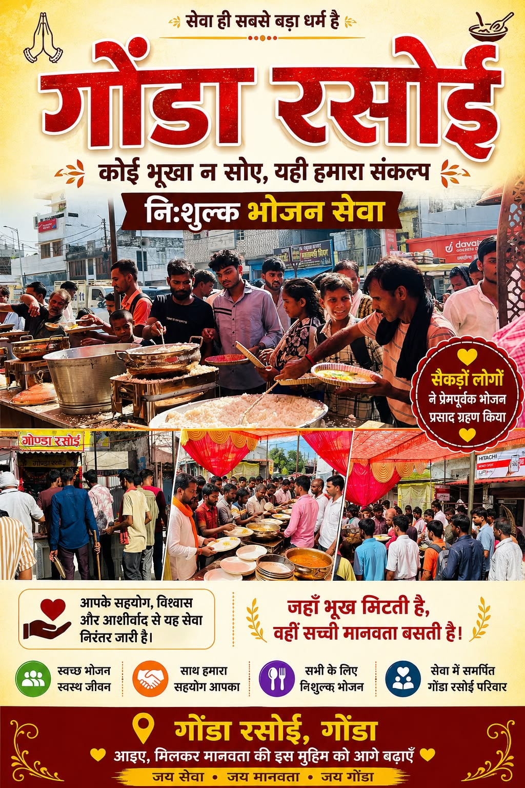
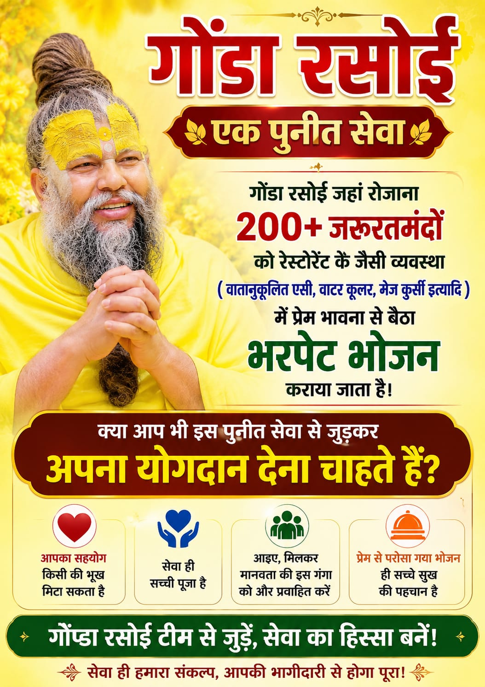

कोई भूखा न सोए —
यही है गोंडा रसोई का संकल्प।
हार्दिक फाउंडेशन की गोंडा रसोई के माध्यम से प्रतिदिन सैकड़ों जरूरतमंदों को स्वच्छ, पौष्टिक और प्रेमपूर्वक भरपेट भोजन उपलब्ध कराया जाता है — रेस्टोरेंट जैसी गरिमापूर्ण व्यवस्था में।
हर दिल तक मदद, हर चेहरे पर मुस्कान।
हार्दिक फाउंडेशन समाज के कमज़ोर वर्गों की सहायता, शिक्षा, स्वास्थ्य, स्वच्छता और पर्यावरण के क्षेत्र में कार्य करते हुए मानवता और सामाजिक समरसता को बढ़ावा देने के लिए समर्पित है। गोंडा रसोई इसी संकल्प की सबसे जीवंत अभिव्यक्ति है।
- भूखे को भोजन, ज़रूरतमंद को सहयोग
- शिक्षा, स्वास्थ्य व स्वच्छता के क्षेत्र में निरंतर कार्य
- आपदा एवं कठिन समय में हर संभव मदद

जहाँ सेवा, सहयोग और समर्पण मिलते हैं।
भोजन वितरण
गोंडा रसोई के माध्यम से प्रतिदिन जरूरतमंदों को स्वच्छ व पौष्टिक भोजन।
शिक्षा सहायता
बच्चों को किताबें, कॉपियाँ व शिक्षण सामग्री उपलब्ध कराना।
स्वास्थ्य शिविर
नियमित स्वास्थ्य जांच शिविर व निःशुल्क परामर्श सेवाएं।
कंबल वितरण
सर्दियों में जरूरतमंदों तक कंबल व गर्म वस्त्र पहुँचाना।
वृक्षारोपण
पर्यावरण संरक्षण हेतु सामुदायिक वृक्षारोपण अभियान।
रक्तदान शिविर
रक्तदान शिविरों के आयोजन से जीवन बचाने में सहयोग।

गोंडा रसोई — एक पुनीत सेवा।
गोंडा रसोई में प्रतिदिन 200+ जरूरतमंदों को वातानुकूलित, वाटर कूलर व मेज-कुर्सी सहित रेस्टोरेंट जैसी गरिमापूर्ण व्यवस्था में प्रेम भावना से भरपेट भोजन कराया जाता है — क्योंकि भोजन केवल पेट भरने का साधन नहीं, सम्मान देने का माध्यम है।
हर रुपये का एक उद्देश्य है।
दानदाता को कभी यह सोचने की ज़रूरत नहीं कि उनका सहयोग कहाँ जाता है। हमारी सेवा का अधिकांश हिस्सा सीधे भोजन व सेवा कार्यों में लगता है।
सहयोग करें →एक विचार से एक निरंतर सेवा तक।
क्योंकि सेवा की कहानियाँ खुद बोलती हैं।
"जहाँ भूख मिटती है, वहीं सच्ची मानवता बसती है। छोटा सा प्रयास, किसी के जीवन में बड़ा बदलाव ला सकता है।"
"आपके सहयोग, विश्वास और आशीर्वाद से यह सेवा निरंतर जारी है। सेवा ही सच्ची पूजा है।"
"प्रेम से परोसा गया भोजन ही सच्चे सुख की पहचान है। आइए, मिलकर मानवता की इस मुहिम को आगे बढ़ाएँ।"
अक्सर पूछे जाने वाले प्रश्न।
आपका दान मुख्यतः गोंडा रसोई के भोजन वितरण व अन्य सेवाकार्यों जैसे शिक्षा सहायता, स्वास्थ्य शिविर व आपदा राहत में सीधे उपयोग होता है।
जी हाँ, आपके योगदान की रसीद उपलब्ध कराई जाती है। अधिक जानकारी के लिए संपर्क करें: 7379761111
बिल्कुल! आप गोंडा रसोई, स्टेशन रोड, गोंडा आकर सेवा में स्वयंसेवक के रूप में जुड़ सकते हैं। संपर्क करें और हमारी टीम आपका मार्गदर्शन करेगी।
जी हाँ, गोंडा रसोई में प्रतिदिन हर जरूरतमंद के लिए भोजन पूर्णतः निःशुल्क है — बिना किसी भेदभाव के।
आपका छोटा सहयोग, किसी के लिए जीवनदान बन सकता है।
आज ही गोंडा रसोई के सेवाकार्य से जुड़ें और भूख मिटाने की इस मुहिम का हिस्सा बनें।